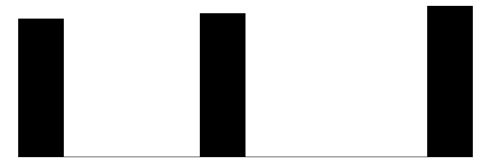

#install.packages(c("modelsummary", "tinytable", "gt", "kableExtra"))
library(modelsummary)beginR Extra: Regression Tables
Necessary Packages
Formula notation in R
lm is R’s function for fitting Ordinary Least Squares (OLS) regressions. There are many other specialized regression models available in R, but fortunately the vast majority use similar notation for formulas.
The arguments given to lm are:
- Formula:
y~xR uses
~in place of the equals sign in formulasR automatically includes an intercept term
This formula is therefore equivalent to:
\[y=intercept + slope * x\]
- Data:
- The dataframe containing the variables of interest.
| Symbol | Role | Example | Equivalent |
|---|---|---|---|
+ |
Add variable | mpg~vs+disp |
\[mpg = intercept + \beta_1 vs + \beta_2 disp\] |
* |
Interactions | mpg~vs*disp |
\[mpg = intercept + \beta_1 vs + \beta_2 disp + \beta_3 vs*disp\] |
. |
Include all variables in dataframe | mpg~. |
\[mpg = intercept + \beta_1 cyl + \beta_2 disp + ... + \beta_{10} carb\] |
- |
Exclude variable | mpg~.-disp-hp |
\[mpg = intercept + \beta_1 cyl + \beta_2 drat + ... + \beta_{8} carb\] |
Let’s fit a simple model with the iris built-in data:
Formatting lm style model results
Once you’ve fit a linear or some other model, you may want to report results. The modelsummary package makes this relatively simple to do, especially in an Quarto document. The code below will produce a common model summary format for a journal or presentation.
data(iris)
mod <- lm(data=iris,Sepal.Length~Species)
mod1 <- lm(data=iris,Sepal.Length~Petal.Width+Species)
mod2 <- lm(data=iris,Sepal.Length~Petal.Length+Petal.Width+Species)
model_list <- list("Species"=mod,
"Species+Width" = mod1,
"Species+Width+Length" = mod2)
modelsummary(model_list)| Species | Species+Width | Species+Width+Length | |
|---|---|---|---|
| (Intercept) | 5.006 | 4.780 | 3.683 |
| (0.073) | (0.083) | (0.107) | |
| Speciesversicolor | 0.930 | -0.060 | -1.598 |
| (0.103) | (0.230) | (0.206) | |
| Speciesvirginica | 1.582 | -0.050 | -2.113 |
| (0.103) | (0.358) | (0.304) | |
| Petal.Width | 0.917 | -0.006 | |
| (0.194) | (0.156) | ||
| Petal.Length | 0.906 | ||
| (0.074) | |||
| Num.Obs. | 150 | 150 | 150 |
| R2 | 0.619 | 0.669 | 0.837 |
| R2 Adj. | 0.614 | 0.663 | 0.832 |
| AIC | 231.5 | 212.1 | 108.2 |
| BIC | 243.5 | 227.1 | 126.3 |
| Log.Lik. | -111.726 | -101.034 | -48.116 |
| F | 119.265 | 98.525 | 185.769 |
| RMSE | 0.51 | 0.47 | 0.33 |
The list("name"=object) notation creates a named list in R. This is useful here to provide names for your models. Names are not required!
Remember, you can use ?modelsummary to get a full list of parameters to change the output table. Here are some commonly changed parameters:
modelsummary(model_list,
stars=T, #add significance stars
fmt = 2, #2 digits
statistic = "[{conf.low}, {conf.high}]", #replace standard errors with confidence intervals
coef_rename = c("Petal.Width" = "Petal Width", #rename variables
"Petal,Length" = "Petal Length",
"Speciesversicolor" = "Versicolor",
"Speciesvirginica" = "Virginica"),
notes = "These models are fit to Fisher's or Anderson's iris dataset.")| Species | Species+Width | Species+Width+Length | |
|---|---|---|---|
| + p < 0.1, * p < 0.05, ** p < 0.01, *** p < 0.001 | |||
| These models are fit to Fisher's or Anderson's iris dataset. | |||
| (Intercept) | 5.01*** | 4.78*** | 3.68*** |
| [4.86, 5.15] | [4.62, 4.94] | [3.47, 3.90] | |
| Versicolor | 0.93*** | -0.06 | -1.60*** |
| [0.73, 1.13] | [-0.52, 0.40] | [-2.00, -1.19] | |
| Virginica | 1.58*** | -0.05 | -2.11*** |
| [1.38, 1.79] | [-0.76, 0.66] | [-2.71, -1.51] | |
| Petal Width | 0.92*** | -0.01 | |
| [0.53, 1.30] | [-0.31, 0.30] | ||
| Petal.Length | 0.91*** | ||
| [0.76, 1.05] | |||
| Num.Obs. | 150 | 150 | 150 |
| R2 | 0.619 | 0.669 | 0.837 |
| R2 Adj. | 0.614 | 0.663 | 0.832 |
| AIC | 231.5 | 212.1 | 108.2 |
| BIC | 243.5 | 227.1 | 126.3 |
| Log.Lik. | -111.726 | -101.034 | -48.116 |
| F | 119.265 | 98.525 | 185.769 |
| RMSE | 0.51 | 0.47 | 0.33 |
Output Formats
modelsummary can output a wide variety of filetypes with the output argument. Some of these outputs may require installing additional packages.
modelsummary(model_list, output = "my_models.xlsx")
modelsummary(model_list, output = "my_models.docx")
modelsummary(model_list, output = "my_models.html")
modelsummary(model_list, output = "my_models.png")Sometimes it can be useful to output a table to one of the more general table packages in R for formatting. Some of the most common packages for general tables are:
gtkableExtraflextablehuxtable
#install.packages("gt")
library(gt)
modelsummary(model_list, output = "gt") %>%
gt::tab_header("My Regression Models") %>%
gt::tab_spanner(label = "Simple Regression", columns = 2) %>%
gt::tab_spanner(label = "Multiple Regression", columns = 3:4)| My Regression Models | |||
|---|---|---|---|
| Simple Regression | Multiple Regression | ||
| Species | Species+Width | Species+Width+Length | |
| (Intercept) | 5.006 | 4.780 | 3.683 |
| (0.073) | (0.083) | (0.107) | |
| Speciesversicolor | 0.930 | -0.060 | -1.598 |
| (0.103) | (0.230) | (0.206) | |
| Speciesvirginica | 1.582 | -0.050 | -2.113 |
| (0.103) | (0.358) | (0.304) | |
| Petal.Width | 0.917 | -0.006 | |
| (0.194) | (0.156) | ||
| Petal.Length | 0.906 | ||
| (0.074) | |||
| Num.Obs. | 150 | 150 | 150 |
| R2 | 0.619 | 0.669 | 0.837 |
| R2 Adj. | 0.614 | 0.663 | 0.832 |
| AIC | 231.5 | 212.1 | 108.2 |
| BIC | 243.5 | 227.1 | 126.3 |
| Log.Lik. | -111.726 | -101.034 | -48.116 |
| F | 119.265 | 98.525 | 185.769 |
| RMSE | 0.51 | 0.47 | 0.33 |
Data Summaries
The datasummary family of functions can be useful for overview tables within modelsummary.
datasummary_skim(iris)| Unique | Missing Pct. | Mean | SD | Min | Median | Max | Histogram | |
|---|---|---|---|---|---|---|---|---|
| Sepal.Length | 35 | 0 | 5.8 | 0.8 | 4.3 | 5.8 | 7.9 | |
| Sepal.Width | 23 | 0 | 3.1 | 0.4 | 2.0 | 3.0 | 4.4 | |
| Petal.Length | 43 | 0 | 3.8 | 1.8 | 1.0 | 4.3 | 6.9 | |
| Petal.Width | 22 | 0 | 1.2 | 0.8 | 0.1 | 1.3 | 2.5 | |
| Species | N | % | ||||||
| setosa | 50 | 33.3 | ||||||
| versicolor | 50 | 33.3 | ||||||
| virginica | 50 | 33.3 |
Here’s an example with another sample dataset:
#install.packages("palmerpenguins")
library(palmerpenguins)
data(penguins)
datasummary_skim(penguins)| Unique | Missing Pct. | Mean | SD | Min | Median | Max | Histogram | |
|---|---|---|---|---|---|---|---|---|
| bill_length_mm | 165 | 1 | 43.9 | 5.5 | 32.1 | 44.5 | 59.6 | |
| bill_depth_mm | 81 | 1 | 17.2 | 2.0 | 13.1 | 17.3 | 21.5 |  |
| flipper_length_mm | 56 | 1 | 200.9 | 14.1 | 172.0 | 197.0 | 231.0 |  |
| body_mass_g | 95 | 1 | 4201.8 | 802.0 | 2700.0 | 4050.0 | 6300.0 |  |
| year | 3 | 0 | 2008.0 | 0.8 | 2007.0 | 2008.0 | 2009.0 |  |
| N | % | |||||||
| species | Adelie | 152 | 44.2 | |||||
| Chinstrap | 68 | 19.8 | ||||||
| Gentoo | 124 | 36.0 | ||||||
| island | Biscoe | 168 | 48.8 | |||||
| Dream | 124 | 36.0 | ||||||
| Torgersen | 52 | 15.1 | ||||||
| sex | female | 165 | 48.0 | |||||
| male | 168 | 48.8 |
Exercise
- Pick a sample dataset (call
data()to get a list of available datasets, or usedata(penguins)fromlibrary(palmerpenguins)). - Pick some variables and use
lmto fit an OLS model. - Create a modelsummary table output. Embed in a Quarto document or output html.
- Use
?modelsummaryto learn about and then change one or more default settings, or use a table package to further format your table.